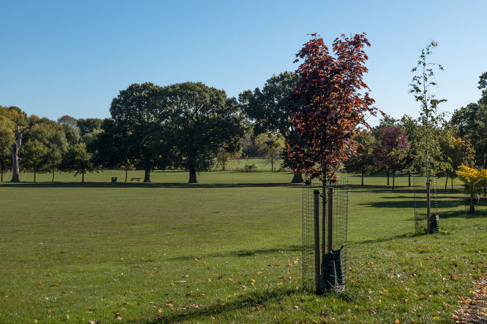

01
Mature tree transplantation
When construction puts mature trees in the way, we move them instead of felling them. We survey and prune each tree, dig and protect the root ball, lift and transport it, replant it at the new site, and stay on for watering and feeding.
Delivered: On NH-307 we relocated 155 mature roadside trees for an NHAI widening project.